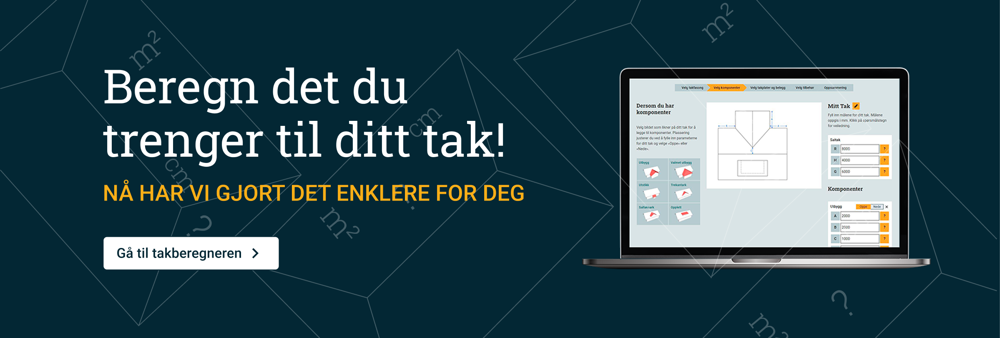
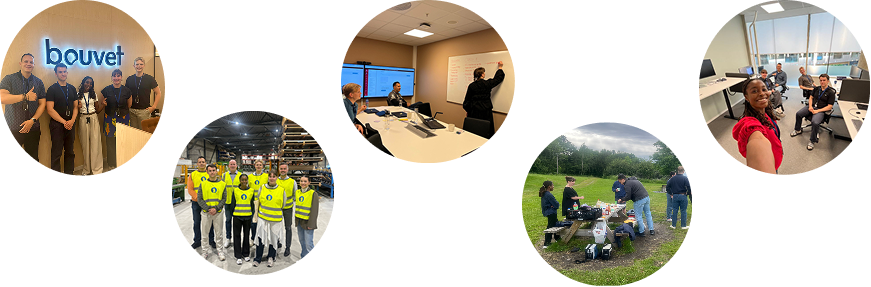
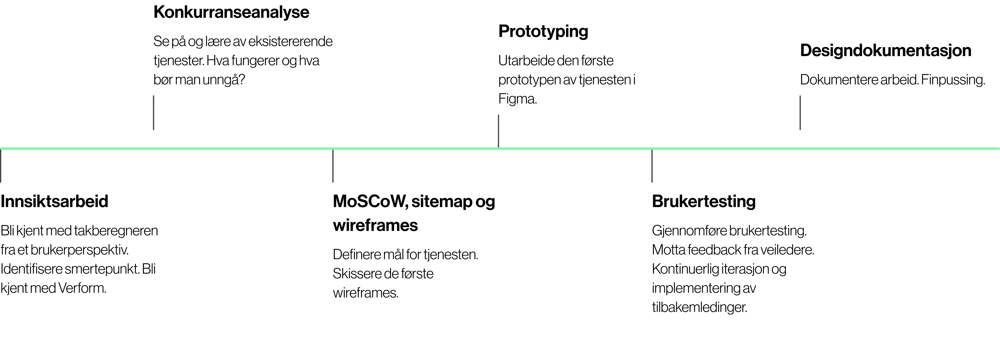
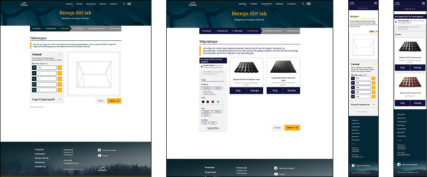
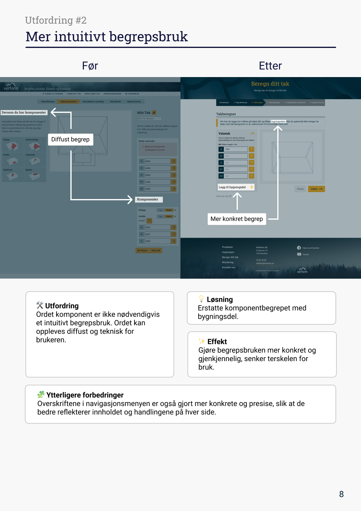
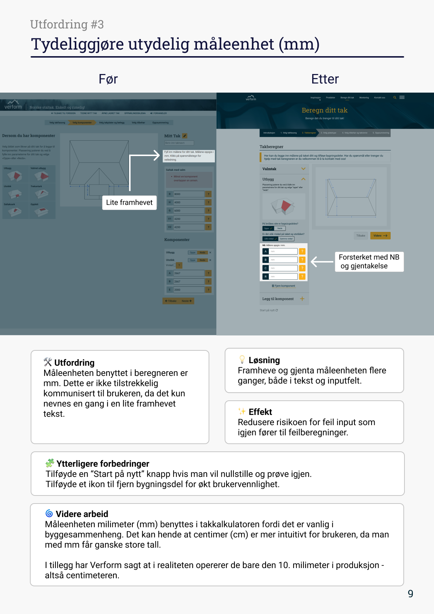

SOMMERJOBB
SOMMER 2025
Redesign av Verform takberegner
Nøkkelord: UI/UX, tjenestedesign, brukerreise, strategisk design, webutvikling
I dette prosjektet redesignet jeg Verforms takberegner som en del av et tverrfaglig studentteam hos Bouvet Nord. Målet var å modernisere løsningen og gjøre den mobiltilpasset, samt å forbedre brukeropplevelsen av tjenesten. Resultatet ble et nytt design, prototypet i Figma og kodet som nettside.
INTRODUKSJON
I 2025 hadde jeg et sommerjobb som designer hos Bouvet Nord i Trondheim. Her jobbet jeg i et tverrfaglig team bestående av utviklere som også var studenter, og sammen gjennomførte vi et prosjekt for kunden Verform, et selskap som produserer og selger takplater i stål. Oppgaven var å redesigne og modernisere Verforms takberegner. Takberegneren er et nettbasert verktøy som hjelper brukere med å beregne hvor mange takplater og hvor mye tilbehør som trengs for å legge et komplett Verform tak. Fram til dette tidspunktet var takberegneren kun tilgjengelig på desktop. Verform ønsket derfor å mobiltilpasse løsningen slik at brukere også kunne benytte tjenesten på mobil.

MIN ROLLE
Jeg var den eneste designeren i teamet, og hadde hovedansvaret for designarbeidet i prosjektet. Min rolle var primært som interaksjonsdesigner, der fokuset var på å redesigne takberegneren og samtidig gjøre den mobiltilpasset. Mit fokus var å forbedre brukerflyten i tjenesten ved å gjøre den mer intuitiv og oversiktelig. Dette innebar blant annet å bruke etablerte designprinsipper og kjente designmønstre for å gjøre tjenesten enklere å forstå og navigere i. Som eneste designer hadde jeg også ansvar for beslutninger knyttet til både design og funksjonalitet. Etter hvert utviklet rollen seg utover den opprinnelige designoppgaven. Jeg gikk mer i dybden på den overordnede brukerreisen fra kunden vurderer bestilling til de mottar ferdig produkt. Her vurderte jeg hvordan brukerflyt og strategi kunne forbedres, samt mulige nye funksjoner til tjenesten og deres tekniske og økonomiske gjennomførbarhet. Mot slutten av prosjektet deltok jeg også i implementasjonen av løsningen, hvor jeg arbeidet med front-end utvikling i HTML og CSS sammen med resten av teamet.

DESIGNPROSESS

MÅLGRUPPE
Takberegneren er designet med førstegangsbrukeren i fokus. Å legge nytt tak er en stor investering, og mange brukere har lite erfaring med å legge tak fra før. Løsningen måtte derfor være enkel, tydelig og lett å forstå , også for brukere uten fagkunnskap.
REDESIGN
Et par wireframes for desktop og mobil

Fokusområder for det nye designet:
- • Komponentbasert design: For bedre responsivitet og enklere overgang til mobilversjon.
- • Fokus på brukervennlighet: Øke brukervennligheten med bruk av kjente designmønste, en oversiktelig layout og visuelle framhevinger. Tydelige knapper, klare tilbakemeldinger og visuelle aksenter skal lede blikket og skape en naturlig flyt gjennom løsningen. Brukeren skal på en enkel og intuitiv måte kunne navigere gjennom tjenesten og forstå hvilke valg som må tas for å komme frem til et korrekt estimat.
- • Grafisk profil: Takberegneren er designet mde Verforms nye grafiske profil. I dag eksisterer takberegneren og Verform sin nettside på to seperate domener. Over tid er målet at takberegneren skal eksistere på samme domenet som nettsiden til Verform. Dermed ble det naturlig å utforme takberegneren med samme grafiske profil som har blitt benyttet på nettsiden., for å ivareta en overordentlig helhet, og viderefører identiteten til Verform inn i takberegneren.
LEVERANSE
Prosjektet resulterte i en ny prototype av Verforms takberegner, utviklet i Figma og videre implementert som en webbasert løsning. Den nye versjonen støttet mobilvisning og hadde en mer strukturert og brukervennlig beregningsflyt. Som en del av leveransen utviklet jeg også:
- • wireframes og prototyper i Figma
- • en implementert front-end løsning i samarbeid med utviklerteamet
- • en designdokumentasjon som beskrev designvalg, endringer i brukerflyten og vurderinger rundt videre utvikling av tjenesten



REFLEKSJON
Prosjektet ga meg verdifull erfaring med å jobbe i et tverrfaglig team hvor design og utvikling måtte gå hånd i hånd. Jeg fikk også praktisk erfaring med hvordan designbeslutninger påvirker implementasjonen i kode.